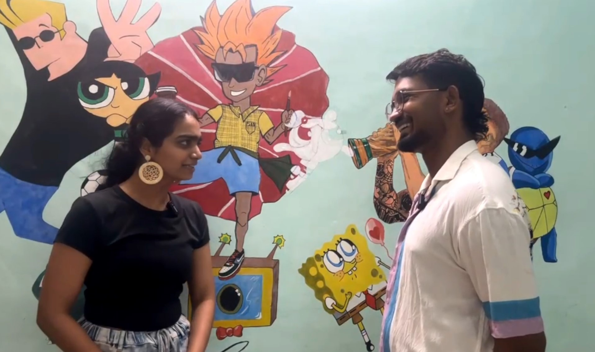

About Me
I'm an engineer who loves bridging technology with curiosity—whether that's building games, crafting productivity tools, or even bringing my favorite anime character to life. I thrive on pushing myself beyond comfort zones, breaking out of boxes, and defying traditional roles. Central to my journey is the art of storytelling—using setbacks as stepping stones, I explore lessons learned and growth achieved. At heart, I’m a runner, a lifter, a painter, and a podcaster who constantly seeks new ways to narrate my personal evolution.
Running: Pushing My Limits
Running has been a transformative journey for me. It began as a way to test my physical and mental endurance, but it soon evolved into a profound metaphor for life itself—placing one foot in front of the other, even through the toughest times. I haven’t yet achieved my goal of running a 10K under an hour, but the journey has taught me to sit with discomfort and realize not all discomforts are the same. Some can guide you, and sometimes the only way through pain and difficulty is to face it head-on. Running has instilled in me discipline, resilience, and the ability to embrace small, consistent efforts toward a bigger goal.
Art: A Canvas for My Thoughts
Painting is where I first learned to disconnect from the constant need to achieve perfection and to simply let things flow. It brought me back to the present moment, teaching me to embrace imperfection. I love painting mostly in acrylic mediums, both on canvas and walls. I’ve customized sneakers and created digital art, but doodles remain my favorite form of expression. Doodling was my first artistic love—it taught me that we don’t always have to stick to conformity. Chaos and explosions (while being artistic) are welcome and liberating. This realization was powerful—it made me feel like I finally belonged somewhere.

Podcasting: Palette Talk
My podcast, "Palette Talk," merges two of my passions: art and meaningful conversations. I invite guests to paint while discussing life’s big questions, creating a unique space for self-expression and introspection. It’s a visual and auditory journey that dives into themes of creativity, vulnerability, and growth—one story, one painting at a time. Check out the Palette Talk playlist on YouTube.
